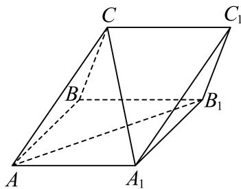

填空题
按本区原卷题号顺序排列。
普陀 · 第1题 ★☆☆☆☆ · 教师预估
不等 ℜ(1+x1)< 0的解集是
考点：分式不等式求解。
难度依据：分式不等式；直接调用定义或基本公式，运算路径短
核查说明：已人工阅读底稿题干和解析；尚未逐页对照原PDF，不作为数学终审。
展开答案与解析
普陀 · 第2题 ★☆☆☆☆ · 教师预估
已知复数z =−i3−2i ，其中i为虚数单位，则z +–z = .
考点：复数共轭与运算。
难度依据：共轭复数运算；直接调用定义或基本公式，运算路径短
核查说明：已人工阅读底稿题干和解析；尚未逐页对照原PDF，不作为数学终审。
展开答案与解析
普陀 · 第3题 ★★☆☆☆ · 教师预估
已知事件A与事件B相互独立，若 P(A∩B)=253,P(B)=53 ，则P(A) =
考点：独立事件概率。
难度依据：独立事件与对立事件；需完成一次转化或结合基本条件后计算
核查说明：已人工阅读底稿题干和解析；尚未逐页对照原PDF，不作为数学终审。
展开答案与解析
普陀 · 第4题 ★☆☆☆☆ · 教师预估
设n ≥ 1， n∈N,Sn 是等差数列 {an} 的前n项和，若 a3n=3an=0 ，则 a10S5 的值为
考点：等差数列通项和前n项和。
难度依据：等差数列通项与求和；直接调用定义或基本公式，运算路径短
核查说明：已人工阅读底稿题干和解析；尚未逐页对照原PDF，不作为数学终审。
展开答案与解析
普陀 · 第5题 ★☆☆☆☆ · 教师预估
设m > 2，拋物线 C:x2=2my 上的点P到C的焦点的距离为5，点P到y轴的距离为3，则m的值为
考点：焦准距离。
难度依据：抛物线焦点与准线；直接调用定义或基本公式，运算路径短
核查说明：已人工阅读底稿题干和解析；尚未逐页对照原PDF，不作为数学终审。
展开答案与解析
普陀 · 第6题 ★☆☆☆☆ · 教师预估
设t ∈ R，若 (1+xt)(1−x) 6的展开式中x3项的系数为10，则t =
考点：二项式系数计算。
难度依据：二项式系数；直接调用定义或基本公式，运算路径短
核查说明：已人工阅读底稿题干和解析；尚未逐页对照原PDF，不作为数学终审。
展开答案与解析
普陀 · 第7题 ★★☆☆☆ · 教师预估
在一个不透明的盒中装着标有数字1，2，3，4的大小与质地都相同的小球各2个，现从该盒中一次取出2个球，设事件A为“取出2个球的数字之和大于5”，事件B为“取出的2个球中最小数字是2”，则P(B∣A)=
考点：条件概率计算。
难度依据：条件概率；需完成一次转化或结合基本条件后计算
核查说明：已人工阅读底稿题干和解析；尚未逐页对照原PDF，不作为数学终审。
展开答案与解析
普陀 · 第8题 ★★☆☆☆ · 教师预估
若一个圆锥的高为 2, ，侧面积为2 2π ，则该圆锥侧面展开图中扇形的中心角的大小为
考点：圆锥展开图与长度。
难度依据：圆锥侧面展开；需完成一次转化或结合基本条件后计算
核查说明：已人工阅读底稿题干和解析；尚未逐页对照原PDF，不作为数学终审。
展开答案与解析
普陀 · 第9题 ★★★☆☆ · 教师预估
本地版本的第9、10题题号顺序存在冲突；本题子集范围的表述也须核正式原卷。
设i,j,n为正整数，集合 M={1,3,5,⋯,2n−1} ，若集合A满足 A⊆M, ，且对A中任意的两个元素 i,j, 皆有 ∣i−j∣>4# 立，记满足条件的集合A的个数为 ∣an ，则 a8=
考点：满足间距条件的子集计数。
难度依据：满足间距条件的子集；需连接多个条件、建模或作分类讨论
核查说明：按现有题干子集条件，源答案19似漏空集和8个单元素集（另加9）；原题可能有OCR遗漏，先核原卷，不擅改。；已人工阅读底稿题干和解析；尚未逐页对照原PDF，不作为数学终审。；本机题目版PDF将该两题排序为第10、第9题，与底稿相反；PDF为重编候选，正式原卷题号需另核。
展开答案与解析
普陀 · 第10题 ★★★☆☆ · 教师预估
本地版本的第9、10题题号顺序存在冲突，当前题号尚待正式原卷核对。
设 kˉ≥1,k∈N,0<φ<2π ，函数 y=f(x) 的表达式为 f(x)=2sin(kx+φ) )，则对任意的实数a，皆有 {f(x)∣a<x<a+2}={f(x)∣x∈R} 成立的一个充分条件是
考点：周期性与开区间值域。
难度依据：周期函数区间值域；需连接多个条件、建模或作分类讨论
核查说明：已人工阅读底稿题干和解析；尚未逐页对照原PDF，不作为数学终审。；本机题目版PDF将该两题排序为第10、第9题，与底稿相反；PDF为重编候选，正式原卷题号需另核。
展开答案与解析
普陀 · 第11题 ★★★★☆ · 教师预估
在棱长为4的正方体 ABCD−A1B1C1D1′ 中， AN=2AM=21AC1 ，若一动点G满足GN=2GM ，则三棱锥 G−A1B1D1 体积的最大值为
考点：球面轨迹与体积最值。
难度依据：球面轨迹与棱锥体积最值；需综合转化、参数分析或完整证明，推理链较长
核查说明：已人工阅读底稿题干和解析；尚未逐页对照原PDF，不作为数学终审。
展开答案与解析
普陀 · 第12题 ★★★☆☆ · 教师预估
E˙a∈R ，函数y = f(x)的表达式为 f(x)={ex,x>0x+a1,x<0, 若函数 ⋅˙g(x)=f(x)f(x+1)−1 恰有三个零点，则a的取值范围是
考点：分段函数零点个数。
难度依据：分段函数零点分类；需连接多个条件、建模或作分类讨论
核查说明：已人工阅读底稿题干和解析；尚未逐页对照原PDF，不作为数学终审。
展开答案与解析
选择题
按本区原卷题号顺序排列。
普陀 · 第13题 ★☆☆☆☆ · 教师预估
某市职业技能大赛的移动机器人比赛项目有19位同学参赛，他们在预赛中所得的积分互不相同，只有积分在前10位的同学才能进入决赛.若该比赛项目中的某同学知道自 己的积分后，要判断自 己能否进入决赛，则他只需要知道这19位同学的预赛积分的（ ）
A. 平均数
B. 众数
C. 中位数
D. 方差
考点：中位数判断。
难度依据：中位数；直接调用定义或基本公式，运算路径短
核查说明：已人工阅读底稿题干和解析；尚未逐页对照原PDF，不作为数学终审。
展开答案与解析
普陀 · 第14题 ★★☆☆☆ · 教师预估
设m ∈ R，在平面直角坐标系xOy中，角α的顶点在坐标原点，始边与x轴的正半轴重合，若角α的终边经过点 P(−3,m) ，且 sin(π+2α)>0 ，则角α属于（ ）
A. 第一象限
B. 第二象限
C. 第三象限
D. 第四象限
考点：象限与倍角关系。
难度依据：角的象限与倍角；需完成一次转化或结合基本条件后计算
核查说明：已人工阅读底稿题干和解析；尚未逐页对照原PDF，不作为数学终审。
展开答案与解析
普陀 · 第15题 ★★★★☆ · 教师预估
设 ∵0,b>0 ，点 M(x0,y0) ，O是坐标原点， ∣OM∣=a. ，F是双曲线Γ: a2x2−b2y2=1 1的左焦点，若直线l: x0x+y0y=a2 经过点F，且与双曲线Γ的右支在第一象限内交于P点，则双曲线Γ的离心率的一个可能的值是（ ）
A. 25
B. 26
C. 27
D. 211
考点：双曲线焦点切线与渐近线。
难度依据：双曲线切线与离心率；需综合转化、参数分析或完整证明，推理链较长
核查说明：已人工阅读底稿题干和解析；尚未逐页对照原PDF，不作为数学终审。
展开答案与解析
普陀 · 第16题 ★★★★☆ · 教师预估
本题资料或解析有待核事项，预览不可作为已审定成品。
设 k≥2，n≥1，k,n∈N，Sn 是数列 {an} 的前 n 项和，且满足 2Sn=3an−1。数列 {bn} 是由 k 个大于 −2 的整数组成的有穷数列，若 b1=0，且
i=1∑kbiak−i+1=0,
则称数列 {bn} 是数列 {an} 的“T数列”。对于数列 {bn} 有如下两个命题：
① 若 b1>0，则数列 {bn} 不是数列 {an} 的“T数列”；
② 若 k≥3，则数列 {an} 的“T数列”至少有5个。
则下列结论中正确的是（ ）。
A. ①为真，②为真
B. ①为真，②为假
C. ①为假，②为真
D. ①为假，②为假
考点：T数列构造与一般性证明。
难度依据：T数列定义；需综合转化、参数分析或完整证明，推理链较长
核查说明：源解由k=2等个案推一般结论，论证不充分，需一般性证明。；已人工阅读底稿题干和解析；尚未逐页对照原PDF，不作为数学终审。
展开答案与解析
解答题
按本区原卷题号顺序排列。
普陀 · 第17题 ★★★☆☆ · 教师预估
如图，在三棱柱 ABC−A1B1C1 中， AC=AA1=AB=2,∠BAA1=3π ，且
CA1=CB,CA1⊥AB1

(1) (6分)求证：平面 CAB1⊥ 平面 AA1B1B⋅
(2) (8分)求直线 CA1 与平面 BB1C1 C所成的角的正弦值.
考点：(1)面面垂直证明；(2)空间向量求线面角。
难度依据：面面垂直与线面角；需连接多个条件、建模或作分类讨论
核查说明：已人工阅读底稿题干和解析；尚未逐页对照原PDF，不作为数学终审。
展开答案与解析
普陀 · 第18题 ★★★☆☆ · 教师预估
iXℏω>0, ，函数 y=f(x) 的表达式为 f(x)=cos(ωx−6π)
(1) (6W)#Πω=2 ，设 △ABC 的内角A,B,C的对边分别为 a,b,c f(C)=−23 ，且c2−a2−b2=4 ，求 △ABC 的面积.
(2) (8分)对任意的 x0∈R ，皆有 f(x0)≤f(3π) 成立，且该函数在区间 (6π,2π) 上不存在最小值，求函数 ⋅y=f(x) 在 x∈(34π,617π) 的单调区间.
考点：(1)正余弦定理解三角形；(2)相位、周期与单调区间。
难度依据：解三角形与三角函数性质；需连接多个条件、建模或作分类讨论
核查说明：已人工阅读底稿题干和解析；尚未逐页对照原PDF，不作为数学终审。
展开答案与解析
普陀 · 第19题 ★★★☆☆ · 教师预估
某区为推进教育数字化转型，通过聚合区域学校的教育资源，依托AI技术搭建了区域智慧题库系统，形成了“A通识过关—B综合拓展—C创新提升”三层动态原库，且A,B,C三层题量之比为7:3:2，设该题库中任意1道题被选到的可能性都相同.
(1) (6分)现有4人参加一项比赛，若每人分别独立地从该题库中随机选取一道题作答，求这4人中至少有2人的选题来自B层的概率；
(2) (8分)现采用分层随机抽样的方法，使用智能组卷系统从该题库中选取12道题生成试卷，若某老师要从生成的这份12道题的试卷中随机选取3道题做进一步改编，记该老师选到A层题的题数为X，求X的分布与期望E(X)
考点：(1)二项概率；(2)分层抽样后分布列与期望。
难度依据：二项概率与分布列期望；需连接多个条件、建模或作分类讨论
核查说明：已人工阅读底稿题干和解析；尚未逐页对照原PDF，不作为数学终审。
展开答案与解析
普陀 · 第20题 ★★★★☆ · 教师预估
设 a>b>0,m>0 ，点A、F分别是椭圆Γ: a2x2+b2y2=1 的上顶点与右焦点，且 ∣AF∣=2. ，直线 l:x−my−1=0 经过点F与Γ交于P、Q两点，O是坐标原点.
(1) (4分)求椭圆Γ的方程；
(2) (6分)若 m=3. ，点M是x轴上的一点，且 △MPQ 的面积为 136 ，求点M的坐标；
(3) (8分)若点G在直线x = 5上，向量 PG 在直线l上的投影为向量 PF ，证明 ∠PGQ<4π
考点：(1)焦点弦；(2)三角形面积；(3)向量投影与角。
难度依据：椭圆焦点弦与面积；需综合转化、参数分析或完整证明，推理链较长
核查说明：已人工阅读底稿题干和解析；尚未逐页对照原PDF，不作为数学终审。
展开答案与解析

普陀 · 第21题 ★★★★★ · 教师预估
本题资料或解析有待核事项，预览不可作为已审定成品。
已知 ∣a,b∈R ，对于函数 [y=f(x), x∈D] ，设集合 A={(x,y)∣y=f(x)} }B={(x,y)∣(x−a)2+(y−b)2≤1},∀ a ,b = A∩B.
(1) (4分)若函数 f(x)=x1−43x ，请判断 Mf(0,0) 中元素的个数，并说明理由；
(2) (6分)设k > 0，函数 f(x)=x+k ，若 Mf(21,0)={(x0,y0)} ，求k的值以及曲线 y=f(x) 在点 P(x0,y0) 处的切线方程；
(3) (8分)设 m˙∈R. ，函数 f(x)=ex−xlnx−x1+m. ，若对于任意的a，皆有 Mf(a,0)=∅ 成立，求m的取值范围.
考点：(1)新定义与交点个数；(2)切线；(3)恒成立参数。
难度依据：函数图像与圆盘交集；需构造新对象、综合多问并处理一般性或参数边界
核查说明：M_f定义OCR破损；第三问源解从g(x)<g(1)推g(x)>1存在逻辑缺口，参数答案须复核。；已人工阅读底稿题干和解析；尚未逐页对照原PDF，不作为数学终审。
展开答案与解析